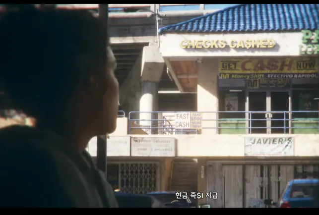

CHECKS CA$HED = 현금 즉$ㅣ 지급

CHECKS CA$HED = 현금 즉$ㅣ 지급
나마씨발 그회산가
ㅋㅋㅋ 그런듯
아 그뜻이구나 ㅋㅋㅋㅋㅋ보면서 즉시 1$ 오타 난건가했는데 ㅋㅋㅋㅋ
저건 좀 웃겼음 ㅋㅋㅋ 즉$I 지급
그타5 이후로 번역 퀄리티가 많이 좋아졌고 더빙은 사펑2077 이후로 좋아지는듯
이게 맞다
이거랑 관련은 없지만 궁금한게 나중에도 저런 번역은 ai가 못하겠지?
저런 인간의 센스까지 ai가 할 수 있으려나
대신 그땐 우리가 거기에 감탄하지 않게 되겠지
ㄴㄴ 존나 잘함
심심하면 직접 돌려봐
가까운 맥락 속에 있는 거면 어느정도 센스있게 처리할 수 있음 그런데 오래된 맥락이 잘 안됨
그런 건 내 마음 속 작은 호날두보다 기계 감스트가 더 잘 해
그런건 ai번역 한번 돌리고 상황에맞게 의역할수있는 문단 찾아서 추천의역해달라하고 추천마다 2~3개 추천해달라하면 잘해줄거같은데
가능은 한데 사람이 골라줘야지
5때 번역한 스튜디오 썻나보네
번역 맛있게 하네
이정도는 되어야 99점받는구나
나마씨발은 정말 전설이다
$IUUUUUU
지붕이 왜 저리 정겹게 생겼냐
번역 찰지게 잘하네